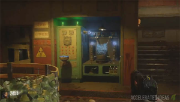

Step 1 - Turn on all the generators
Unlocking the entire map is the bare minimum to achieve the Easter Egg so your first port of calls is to locate and turn on the power in each of the areas.

Unlocking the entire map is the bare minimum to achieve the Easter Egg so your first port of calls is to locate and turn on the power in each of the areas.
Put simply, take one of the black skulls from the main ritual area and place it on the corresponding altar located elsewhere on the map (matching the symbol on the skull with the altar). Defend the skull and return it back to the ritual altar afterwards. Repeat for every skull (x 4) then collect the new weapon underground after killing the Keepers.
The yellow pillar in the ritual site has a particular set of challenges associated with it (3 x challenges). Point your weapon at the symbols to read the challenges you must undertake. Examples are: shooting zombies under water, watering plants, using traps etc.
Complete a challenge and the screen will say something like "Trial complete". Return to the pillar, press square and accept your reward from the tomb. The reward for each challenge tier is different. You will get a max-ammo (tier 1), heavy weapon (tier 2) and perk bottle (extra slot, tier 3).
Repeat the process three times (each player must do theirs) to complete each of the pillar challenges until all three are complete. Lightning will strike the ritual site every few minutes - this is important for later.
Locate and collect each of the Machine Parts (three parts in total). Each part appears in your inventory as a separate item and together they are used to repair several pumps to open the Pack-a-Punch area.
This step is not essential but without PaP you're going to suffer later.
The KT-4 is one of the maps Wonder Weapons and an essential tool for unlocking new areas of the map and growing special plants later. You will need to find three parts and locate the special workbench underground to build it.
The regular zombie shield is built from three parts (see video below for parts), it can also be upgraded to an electric version to help with the Easter Egg steps. To electrify the shield, equip it close to the ritual site, wait for lightning to strike the area then walk through the aftereffects and the shield will be electrified.
Now that you have the KT-4 it's time to open up new areas of the map. Head to the 115 Water pool at the back of Lab A and note the blue spider web which cannot be destroyed with a regular knife. Instead shoot the KT-4 to "melt" the web, revealing a new underground entrance.
Follow the path underground to a very dark and eerie cavern. The giant boss spider will appear right in front of you. Aim for his mouth and use all your firepower to kill him off. Once the spider's dead, cross the gap and locate the "fresh widows wine" machine to grab a free Widows Wine perk.
Take the Skull of Nan Sapwe to the room with purple 115 Water (inside the bunker, next to the room with the cocoon/corpse bodies where you collected the Machine Tools part). Use the skull to scan the wall, revealing a poster of the building plans with the elevator and lower levels shown.
This will kick start the main Easter Egg.
Go to the entrance of the Bunker, head into the first room (where Gobble Gum machine and perk are) and use the Skull of Nan Sapwe to scan the wall on the left. The brickwork will crumble to reveal a secret entrance/room with a large generator inside. The key to this room is repairing the elevator shaft which takes us down to the huge Thrasher (tree monster) who is locked behind bars. This abomination is Takeo 1.0.
Also at this point, a huge bomber plane will fly over the map. It does re-appear every few rounds.
The original KT-4 weapon can be upgraded to a superior version called the Masamune. There are a series of small "easter egg" style puzzles that you need to solve to achieve this. The video below which explains how to get each of the upgrade parts (rainbow water, spider venom, skeleton test tube) for the KT-4 to turn it into the Masamune.
There are three cogs required to repair the elevator that leads deep underground. The location of each of the cogs is:
Make sure you have the "Anywhere but here" gobble gum in your inventory. Simply use the Gobble Gum to teleport to the secret dragon room (this only works after you have revealed the elevator room so don't skip any steps above). There are drawings of dragons on the table and a huge dragon egg in the middle of the room. We're interested in the missing cog which is also located in here. Find the cracked shell and pick it up.
Go to Lab A and in particular the zip line which leads to the Docks. Use an electrified zombie shield to hit the control panel. Now take the zip line, hold down on the analog stick and use melee exactly when you want to fall off. Time it perfectly and drop down to a secret platform below. Collect the cog.
Plant a seed and water it every round with blue water and shoot the plant with the Kt-4 (or Masamune, either one works). Repeat for 3 rounds (blue water and KT-4 shot) until the plant is fully grown. Harvest the reward inside which as an AA shell for the anti-aircraft gun - it's huge so you won't miss it.
Locate the AA gun which is through the bunker door, turn right and head upstairs (similar spot where you find one of the shield parts). Insert the AA shell first (using square), then go to the back of the gun and interact again to shoot down the plane. A good tip for this part is to use the "Killing time" gobble gum which will slow down time for 20 seconds, thus helping you hit the plane first time.
Find the wreckage and pick up the smoldering cog. It's usually on the ground by either Lab A or Lab B.
During the game Richtofen will say several quotes relating to the test subject e.g. "We must locate the test subject and ensure his journey is brought to an end. Remember we will soon forget".
Head back to the elevator on the left side of the bunker entrance (the one you opened with the skull). Insert the missing parts (cogs x 3). The elevator will open and you can use it to go deep underground to a prison like area.
Use the Masamune to clear the vines that are blocking your way.
The boss fight will now start. Fight off the mobs in the room until you have a clear shot of the BOSS's arms with the orange spores. Use the Masamune to unleash as many charged shots as you can, attempting to burst each of the spores. Repeat until all the spores are gone.
After killing the BOSS, the cutscene will play.